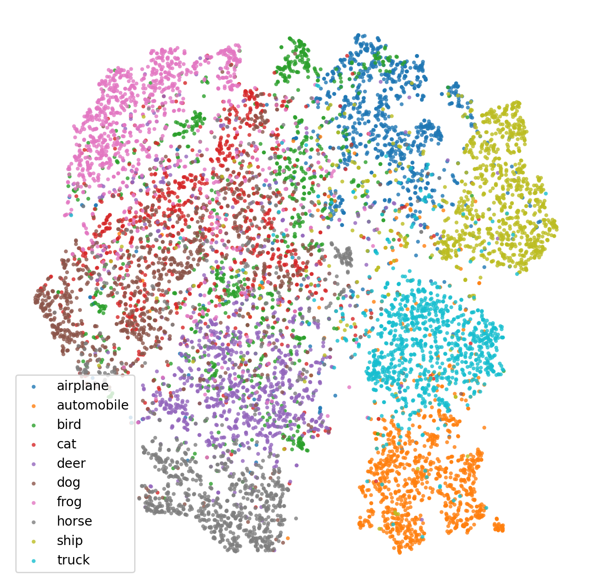
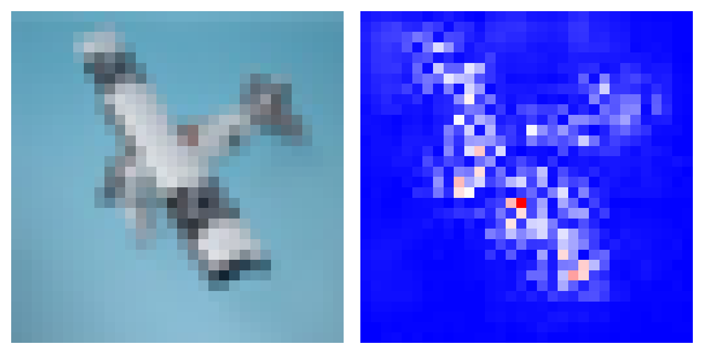
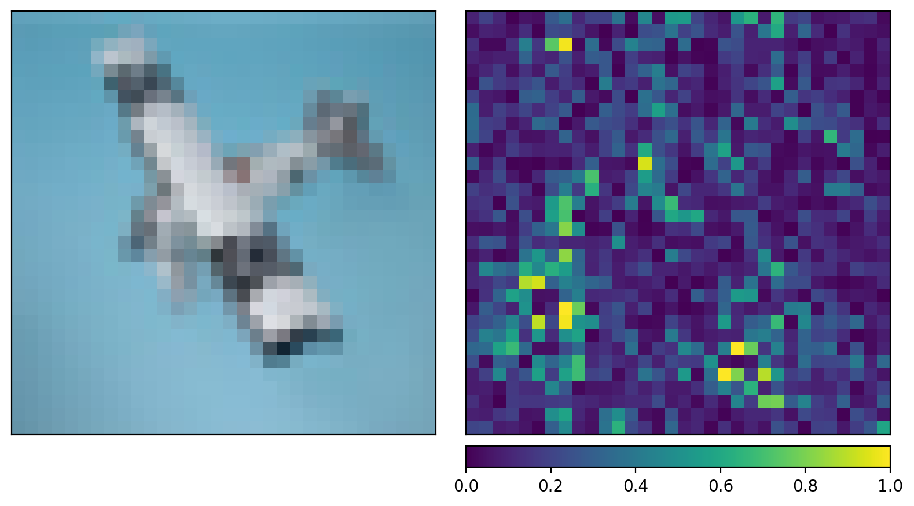

%reload_ext autoreload
%autoreload 2Self-Supervised Learning
pytorch
ssl
from typing import Any, Optional, Iterable
from dataclasses import dataclass
import os
import numpy as np
from matplotlib import pyplot as plt
%config InlineBackend.figure_formats = {'retina', 'png'}
import torch
from torch import nn, optim, Tensor
from torch.nn import functional as F
from torch.utils import data
from torchvision import models, datasets, transforms as VT
import lightning as L
from lightly.transforms.utils import IMAGENET_NORMALIZE
@dataclass
class Arguments:
num_workers:int = len(os.sched_getaffinity(0))
args = Arguments(); argsArguments(num_workers=16)From what I read, SSL consist of three major things: - Backbone, projection head, and augmentation protocol.
torch.set_float32_matmul_precision('medium')from lightly.loss import NTXentLoss
from lightly.models.modules import SimCLRProjectionHead
from lightly.transforms.simclr_transform import SimCLRTransform
class SimCLR(L.LightningModule):
def __init__(self) -> None:
super().__init__()
#self.resnet = models.resnet18()
resnet = models.resnet34()
self.resnet = resnet
self.backbone = nn.Sequential(*list(resnet.children())[:-1])
self.projection_head = SimCLRProjectionHead(512, 2048, 2048)
self.criterion = NTXentLoss()
def forward(self, x):
x = self.backbone(x).flatten(start_dim=1)
z = self.projection_head(x)
return z
def training_step(self, batch, batch_idx):
(x0, x1), _ = batch
z0 = self.forward(x0)
z1 = self.forward(x1)
loss = self.criterion(z0, z1)
self.log("train_loss", loss, prog_bar=True, on_epoch=True)
return loss
def predict_step(self, batch, batch_idx):
samples, labels = batch
outputs = self.backbone(samples).flatten(start_dim=1)
return outputs
def configure_optimizers(self):
optimizer = optim.Adam(self.parameters(), lr=1e-3)
return {
"optimizer": optimizer,
"lr_scheduler": {
"scheduler": optim.lr_scheduler.ReduceLROnPlateau(optimizer, verbose=True, eps=0.5),
"monitor": "train_loss_epoch",
}
}
return optimizerclass UnNormalize(object):
def __init__(self, mean: Iterable[float], std: Iterable[float]):
self.mean = mean
self.std = std
def __call__(self, tensor: Tensor) -> Tensor:
for t, m, s in zip(tensor, self.mean, self.std):
t.mul_(s).add_(m)
# The normalize code -> t.sub_(m).div_(s)
return tensor
### Self-supervised pretraining dataset
pretrain_transform = SimCLRTransform(input_size=32)
pretrainset = datasets.CIFAR10(root='~/datasets/cifar10', train=True, download=False, transform=pretrain_transform)
pretrain_loader = data.DataLoader(pretrainset, batch_size=256, shuffle=True, drop_last=True, pin_memory=True, num_workers=args.num_workers)
### Classification training
trainset_transform = VT.Compose([
VT.ToTensor(),
VT.Normalize(mean=IMAGENET_NORMALIZE["mean"], std=IMAGENET_NORMALIZE["std"] ,inplace=False),
])
trainset = datasets.CIFAR10(root='~/datasets/cifar10', train=True, download=False, transform=trainset_transform)
trainset_loader = data.DataLoader(trainset, batch_size=256, shuffle=True, drop_last=True, pin_memory=True, num_workers=args.num_workers)
### Evaluation
testset_transform = trainset_transform
testset = datasets.CIFAR10(root='~/datasets/cifar10', train=False, download=False, transform=testset_transform)
testset_loader = data.DataLoader(testset, batch_size=256, shuffle=False, drop_last=False, num_workers=args.num_workers)
### Visualization testset
vis_testset = datasets.CIFAR10(root='~/datasets/cifar10', train=False, download=False, transform=None)
reverse_transform = VT.Compose([
UnNormalize(mean=IMAGENET_NORMALIZE["mean"], std=IMAGENET_NORMALIZE["std"]),
VT.ToPILImage(),
])
trainer = L.Trainer(
max_epochs=1000,
devices=1,
accelerator='cuda',
precision='bf16-mixed',
benchmark=True,
logger=False,
#accumulate_grad_batches=8,
#enable_checkpointing=False,
)
model = SimCLR()
#trainer.fit(model=model, train_dataloaders=pretrain_loader)
model = SimCLR.load_from_checkpoint('./checkpoints/epoch=999-step=195000.ckpt')Using bfloat16 Automatic Mixed Precision (AMP)
GPU available: True (cuda), used: True
TPU available: False, using: 0 TPU cores
IPU available: False, using: 0 IPUs
HPU available: False, using: 0 HPUsfrom copy import deepcopy
from sklearn.metrics import accuracy_score, f1_score
class Classifier(L.LightningModule):
def __init__(self, backbone: nn.Module, n_classes:int=10):
super().__init__()
# Copy the original net
self.backbone = deepcopy(backbone)
# Freeze the feature extraction layers (backbone)
for param in self.backbone.parameters():
param.requires_grad = False
self.classifier = nn.Linear(512, n_classes)
self.criterion = F.cross_entropy
self.labels_true = []
self.labels_pred = []
def forward(self, x):
x = self.backbone(x).flatten(start_dim=1)
x = self.classifier(x)
return x
def training_step(self, batch, batch_idx):
inputs, targets = batch
outputs = self.forward(inputs)
loss = self.criterion(outputs, targets)
self.log("train_loss", loss, prog_bar=True)
return loss
def validation_step(self, batch, batch_idx, dataloader_idx=0):
inputs, targets = batch
outputs = self.forward(inputs)
#loss = self.criterion(outputs, targets)
self.labels_true.append(targets)
self.labels_pred.append(torch.argmax(outputs, dim=1))
#self.log("val_loss", loss, prog_bar=True)
def on_validation_epoch_end(self):
y_true = torch.cat(self.labels_true).cpu().numpy()
y_pred = torch.cat(self.labels_pred).cpu().numpy()
acc = accuracy_score(y_true, y_pred)
f1 = f1_score(y_true, y_pred, average='weighted')
self.log('val_acc', acc, prog_bar=True, on_step=False, on_epoch=True)
self.log('val_f1', f1, prog_bar=True, on_step=False, on_epoch=True)
# Do something with all predict
self.labels_true.clear() # free memory
self.labels_pred.clear()
print(f"ACC: {acc*100:.1f}% F1: {f1*100:.1f}%")
def configure_optimizers(self):
optimizer = optim.Adam(self.parameters(), lr=1e-3)
return {
"optimizer": optimizer,
"lr_scheduler": {
"scheduler": optim.lr_scheduler.ReduceLROnPlateau(optimizer, verbose=True, eps=0.5),
"monitor": "val_acc",
}
}
clf = Classifier(model.backbone)
trainer = L.Trainer(
max_epochs=64,
devices=1,
accelerator='cuda',
precision='bf16-mixed',
benchmark=True,
logger=False,
enable_checkpointing=False,
enable_progress_bar=False
)
trainer.fit(model=clf, train_dataloaders=testset_loader, val_dataloaders=testset_loader)
#trainer.validate(model=clf, dataloaders=testset_loader)Using bfloat16 Automatic Mixed Precision (AMP)
GPU available: True (cuda), used: True
TPU available: False, using: 0 TPU cores
IPU available: False, using: 0 IPUs
HPU available: False, using: 0 HPUs
LOCAL_RANK: 0 - CUDA_VISIBLE_DEVICES: [0]
| Name | Type | Params
------------------------------------------
0 | backbone | Sequential | 21.3 M
1 | classifier | Linear | 5.1 K
------------------------------------------
5.1 K Trainable params
21.3 M Non-trainable params
21.3 M Total params
85.159 Total estimated model params size (MB)
`Trainer.fit` stopped: `max_epochs=64` reached.ACC: 13.7% F1: 6.8%
ACC: 73.0% F1: 72.5%
ACC: 75.8% F1: 75.7%
ACC: 75.8% F1: 75.7%
ACC: 76.0% F1: 76.0%
ACC: 76.4% F1: 76.5%
ACC: 76.8% F1: 76.9%
ACC: 77.2% F1: 77.3%
ACC: 77.5% F1: 77.5%
ACC: 77.7% F1: 77.7%
ACC: 78.0% F1: 78.0%
ACC: 78.2% F1: 78.2%
ACC: 78.3% F1: 78.3%
ACC: 78.5% F1: 78.5%
ACC: 78.6% F1: 78.5%
ACC: 78.5% F1: 78.5%
ACC: 78.6% F1: 78.5%
ACC: 78.6% F1: 78.6%
ACC: 78.8% F1: 78.7%
ACC: 78.9% F1: 78.8%
ACC: 79.0% F1: 79.0%
ACC: 79.2% F1: 79.1%
ACC: 79.3% F1: 79.2%
ACC: 79.3% F1: 79.2%
ACC: 79.3% F1: 79.2%
ACC: 79.4% F1: 79.3%
ACC: 79.4% F1: 79.3%
ACC: 79.6% F1: 79.5%
ACC: 79.5% F1: 79.4%
ACC: 79.7% F1: 79.5%
ACC: 79.8% F1: 79.7%
ACC: 79.8% F1: 79.6%
ACC: 79.8% F1: 79.7%
ACC: 79.8% F1: 79.6%
ACC: 80.0% F1: 79.8%
ACC: 79.9% F1: 79.7%
ACC: 79.9% F1: 79.8%
ACC: 80.1% F1: 80.0%
ACC: 80.2% F1: 80.0%
ACC: 80.2% F1: 80.0%
ACC: 80.2% F1: 80.0%
ACC: 80.2% F1: 80.0%
ACC: 80.2% F1: 80.0%
ACC: 80.4% F1: 80.2%
ACC: 80.5% F1: 80.3%
ACC: 80.3% F1: 80.2%
ACC: 80.5% F1: 80.3%
ACC: 80.6% F1: 80.4%
ACC: 80.5% F1: 80.4%
ACC: 80.6% F1: 80.4%
ACC: 80.7% F1: 80.5%
ACC: 80.7% F1: 80.5%
ACC: 80.7% F1: 80.5%
ACC: 80.7% F1: 80.6%
ACC: 80.8% F1: 80.6%
ACC: 80.8% F1: 80.6%
ACC: 80.7% F1: 80.6%
ACC: 80.8% F1: 80.6%
ACC: 80.9% F1: 80.7%
ACC: 80.8% F1: 80.7%
ACC: 80.8% F1: 80.7%
ACC: 80.9% F1: 80.8%
ACC: 80.8% F1: 80.6%
ACC: 80.9% F1: 80.7%
ACC: 80.9% F1: 80.8%embeddings = trainer.predict(model=model, dataloaders=testset_loader, return_predictions=True)
embeddings = torch.cat(embeddings).float().numpy()LOCAL_RANK: 0 - CUDA_VISIBLE_DEVICES: [0]from sklearn.manifold import TSNE
from sklearn.preprocessing import StandardScaler
from sklearn.pipeline import Pipeline
pipeline = Pipeline([
('scaler', StandardScaler()),
('cluster', TSNE(n_jobs=-1, random_state=42))
])
#scaler = StandardScaler()
#X = TSNE(n_jobs=-1, random_state=42).fit_transform(embeddings)
#X = scaler.fit_transform(X)
X = pipeline.fit_transform(embeddings)
samples = np.asarray([x for x, _ in vis_testset])
labels = np.asarray([label for _, label in vis_testset])from matplotlib import offsetbox
from PIL.Image import Image
def plot_embeddings(
x1: np.ndarray,
x2: np.ndarray,
samples: Iterable[np.ndarray | Image | Tensor],
labels: Iterable[int | str] | None = None,
min_distance: float = 0.1,
zoom: float = 0.5,
ax: Any | None = None,
) -> Any:
if ax is None:
ax = plt.gca()
# Requires matplotlib >= 1.0
X = np.stack([x1, x2], axis=-1)
shown_images = np.array([[np.inf, np.inf]])
for i in range(X.shape[0]):
dist = np.sum((X[i] - shown_images) ** 2, 1)
if np.min(dist) < min_distance:
# don't show points that are too close
continue
sample = samples[i]
if isinstance(sample, Tensor):
sample = sample.permute(1, 2, 0).numpy()
if isinstance(sample, Image):
sample = np.asarray(sample)
#assert sample.shape != (32, 32, 3), sample.shape
shown_images = np.r_[shown_images, [X[i]]]
im = offsetbox.OffsetImage(sample, zoom=zoom)
ab = offsetbox.AnnotationBbox(offsetbox=im, xy=X[i], frameon=False)
ax.add_artist(ab)
return ax
fig, ax = plt.subplots(figsize=(10, 10), dpi=192)
ax.axis('off')
x0, x1 = X[:,0], X[:,1]
plt.scatter(x0, x1, marker='.', edgecolors='none', alpha=0.0)
plot_embeddings(x0, x1, samples=samples, ax=ax)
plt.show()
import matplotlib as mpl
classes = ['airplane', 'automobile', 'bird', 'cat', 'deer', 'dog', 'frog', 'horse', 'ship', 'truck']
#cmap = mpl.colormaps.get_cmap('jet').resampled(10)
cmap = mpl.colormaps.get_cmap('tab10')
fig, ax = plt.subplots(figsize=(8, 8))
for label in sorted(set(labels)):
ax.scatter(X[labels==label, 0], X[labels==label, 1], color=cmap(label), marker='.', edgecolors='none', alpha=0.8, label=classes[label])
ax.axis('off')
ax.legend()
plt.show()
from captum.attr import IntegratedGradients, GuidedBackprop, GradientShap/home/gcerar/miniconda3/envs/quarto/lib/python3.11/site-packages/tqdm/auto.py:21: TqdmWarning: IProgress not found. Please update jupyter and ipywidgets. See https://ipywidgets.readthedocs.io/en/stable/user_install.html
from .autonotebook import tqdm as notebook_tqdmclf.eval()
gbp = GuidedBackprop(deepcopy(clf))
#ig = IntegratedGradients(deepcopy(clf))
sample_norm, label = testset[1555]
sample = reverse_transform(sample_norm.clone())
attr = gbp.attribute(sample_norm.unsqueeze(0), target=label)
attr = attr.squeeze().permute(1, 2, 0).numpy()
attr = np.sum(np.abs(attr), axis=-1)
attr.shape(32, 32)from matplotlib import colors
fig, (ax1, ax2) = plt.subplots(ncols=2, tight_layout=True)
ax1.imshow(sample, interpolation='none')
ax1.axis('off')
#ax2.imshow(attr, interpolation='none', cmap='bwr')
#divnorm = colors.TwoSlopeNorm(vmin=np.min(attr), vcenter=0., vmax=np.max(attr))
ax2.imshow(attr, cmap='bwr', interpolation='none')
ax2.axis('off')
plt.show()
from captum.attr import visualization as viz# TODO:
torch.manual_seed(0)
np.random.seed(0)
default_cmap = 'viridis'
gradient_shap = GradientShap(clf)
# Definition of baseline distribution of images
rand_img_dist = torch.cat([sample_norm.unsqueeze(0) * 0, sample_norm.unsqueeze(0) * 1])
attributions_gs = gradient_shap.attribute(
sample_norm.unsqueeze(0),
n_samples=1,
stdevs=0.0001,
baselines=rand_img_dist,
target=label
)
_ = viz.visualize_image_attr_multiple(
np.transpose(attributions_gs.squeeze().cpu().detach().numpy(), (1,2,0)),
np.transpose(VT.PILToTensor()(sample).squeeze().cpu().detach().numpy(), (1,2,0)),
["original_image", "heat_map"],
["all", "absolute_value"],
cmap=default_cmap,
show_colorbar=True
)